SPORE
Idle · iOS · in the making
You are not the mycelium. You are its conditions. It grows on its own, at the tips, across a map of physical things — crumbs, a paper napkin, a wooden board, a smear of grease, a plastic bottle cap, an iron fork. You decide what it learns to dissolve, and where it reaches. It starts on a table top and it is meant to end somewhere much larger than a table.
A material without its enzyme is a wall
Every pixel of the map is a material, and a material dissolves only at the speed of the enzyme for it. No enzyme means a rate of nothing at all: the iron fork can be seen, walked up to and stared at, and it will not give way until a siderophore exists. So the first level of an enzyme is a door — you can eat wood now — and is priced like one. Every level after it only buys speed. That is the whole shape of the upgrade tree: a few doors, and a lot of speed.
It grows at the tips, and there are very few of them
A hypha extends at its apex, branches, and steers around what it cannot chew. It does not spread like a stain, and it does not draw straight lines. Standing in food it branches constantly, and the colony fans out and takes the whole crumb; out on bare table it branches rarely and runs long and thin, looking for the next one.
Growing points are bought one at a time and dearly, because each one is also an order: you may point at as many places as you have tips to send, and no more. Point at something and the nearest thread walks through the body of the colony to the edge closest to it, and sets off from there. Point at nothing and it explores on its own — badly, wandering, but it never stops.
Nothing is ever reset
There is no prestige and no losing. Progress is held by the ground rather than by the thread working on it, so a tip that gives up leaves its work in the wall and the wall still wears through; if nothing at all feeds the colony, the softest edge still creeps. The goal of a place is a thing you reach, not a number you pass: a table leg. Then down the leg to the floor, and the rooms, and on from there — the map you have taken stays taken, and gets smaller in the rear-view every time.
How it is made
A canvas of a hundred thousand pixels, painted once and copied to the screen every frame, so a map you drag with a finger moves like paper and not like a slideshow. Growth is apical tips with headings and wobble; fog of war and the supply lines are chamfer distance transforms; the way through the colony to each order is its own breadth-first sweep. TypeScript, Preact and signals, wrapped for iOS with Capacitor. No engine, no sprites, no ads, no analytics and no server: it is one file of saved state on your phone.
Where it is
In the making, and not out yet — there is nothing to play here today. It is built and put on a phone several times a day, which is the only way it is ever tested.